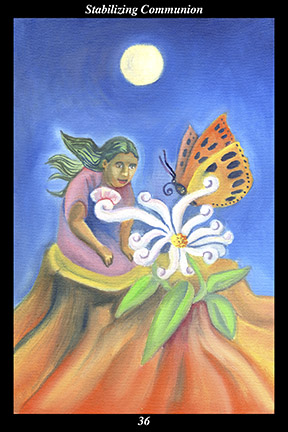

 | IMAGEIn the light of the full moon there blooms a wondrous flower, whose petals grow in the form of speech glyphs. In an otherwise empty and desolate wilderness, a female warrior shares the flower with a gigantic butterfly. |
INTERPRETATION
This hexagram depicts the attunement of spirit to spirit. The full moon symbolizes the height of the female warrior’s power. The flower symbolizes the fleeting perfection of every blossoming moment. The petals that grow in the form of speech glyphs show that it is the flower’s essence that calls kindred spirits together. The wilderness symbolizes a place that appears on the surface to be lonely and deserted. The female warrior means that you nurture, and are nurtured by, everything that touches you. The butterfly means that you are accompanied by the spirit of a great warrior who has returned from the house of the sun to inspire and encourage the living. Taken together, these symbols mean that you achieve a lasting intimacy with nature, other people, and the divine.
ACTION
The feminine half of the spirit warrior sets the past and future aside in order to be absorbed in the present. We separate ourselves from the world around us when we focus on our own emotions and listen to our own thoughts. While there are times for introspection, constantly ruminating on internal experiences stunts our development at the stage of the physical and social identity. In order to develop the spiritual identity, it is necessary to train awareness to move past its preoccupation with the strictly personal and to sense itself immersed in the sea of spirit encompassing all creation. Introspection loses its effectiveness when it merely reinforces existing problems by going over them time and time again: problems that cannot be solved by introspection can be dissolved by experiencing the commingling of spiritual identities. This is a time to achieve spiritual equilibrium, eliminating the fluctuations of mood and the habits of thought by sensing the unitary nature of all creation. For this reason, communion seems like a different kind of sense perception, one that allows us to sense the single body of spirit beyond our body’s senses. By attuning your awareness to the single awareness unifying the whole, you stabilize your emotions and thoughts in the present moment, taking away their power to interrupt your spiritual rapport with nature, other people, and the divine. By making communion with the greater world beyond you your priority, you enjoy a prolonged period of contentment and success.
INTENT
The barriers between you and the world dissolve the more you revere the sacred nature of all existence: sensing the universal essence common to everything whose existence you share, you move permanently beyond fear and insecurity into wonder and joy. While developing the sense of communion is intoxicating and rewarding, it remains the first step in an unfinished journey until the time that your habits of emotion and thinking are stabilized: when you sense the world as a sea binding all its drops into a single present, no longer interrupted by images of the past and future, you solidify your spiritual identity and feel yourself at one with all things. Intimate with nature, people, and the divine, you transform yourself endlessly without ever changing. Everywhere you go, you meet your twin.
SUMMARY
You enter a period of tranquility and peace of mind, one in which goals and obstacles are set aside in favor of sharing moments of purposeless activity with who and what you love. Set aside the need to be productive by immersing yourself in an extended time out: focus on profoundly appreciating spirit radiating from every blissful form and you merge, like a tear of bliss, into the sea of bliss.
THE LINE CHANGES
1° You recognize that others are responding to something you cannot quite make out—like an itch you can’t scratch, it demands more attention. This is the barely perceptible influence ever circulating between people. Like any of your other senses, the more finely it is tuned, the more it perceives.
2° You recognize another, immediately certain they play an important role in your life. Yet this person does not respond immediately—though accessible, they proceed cautiously, like one not trusting their instincts. Slow down, match the other’s pace—this is most favorable in the long run.
3° Your patience and character are sorely tested—the one you belong with is inaccessible and the one you should avoid is willing. Don’t focus on aloneness—focus on the kind of conduct that will convince the right one. Not being serious here will only ensure your aloneness.
4° The window of opportunity opens—the influence you feel between you and your companions is felt by them, too. This heartfelt bond allows you all to move as one. You will achieve your goal but it will not be as fulfilling as expected.
5° You have a responsibility to those above as well as those below—and much of your success comes from being sensitive to the needs of both. Neither of them care about the other’s needs and both are demanding your support. Ignore pressure and hold to the highest ethical standard.
6° People are defined by what they are sensitive to—the influence circulating between people is not always of the best intent. When others flatter you and tell you secrets in confidence, they seek to sway you without your consent. You should sense this as they approach and shut them out.